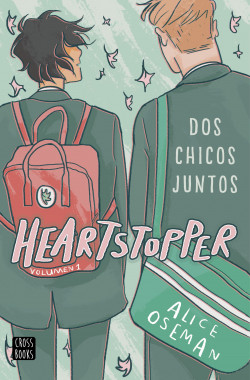
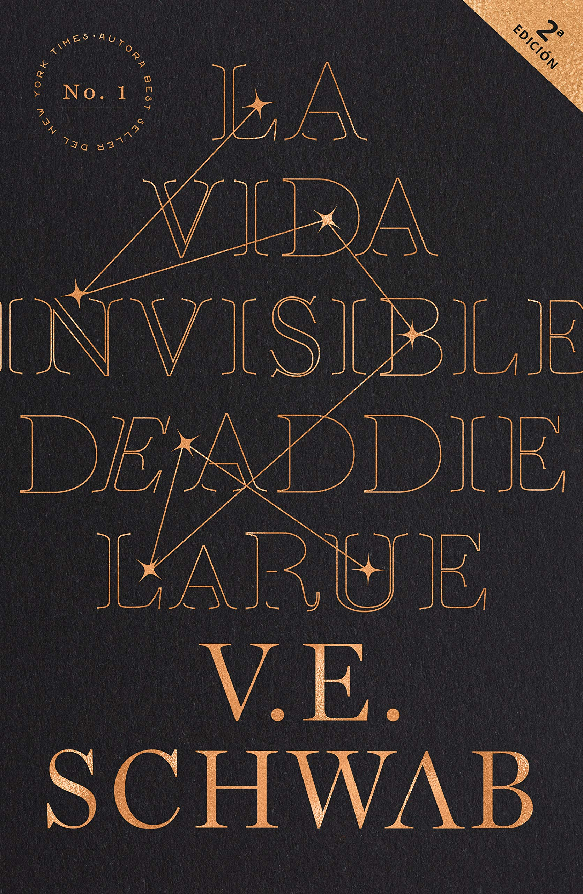
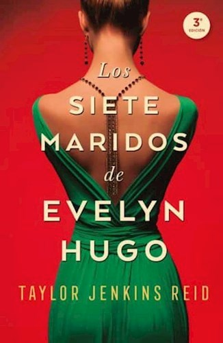
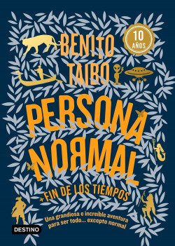

¿Qué es Booktube?
En un pequeño espacio en youtube desde hace más de diez años, se ha ido creando una de las comunidades más grandes en la actualidad, Booktube.
En Booktube se habla de libros, si, pero no de la forma en la piensas. En Booktube se habla de lo que te hacen sentir los libros, de las historias que viven en tu memoria, de las páginas que te hicieron ver otra realidad, de lo que representan los personajes para vos, sobre lo que los autores te inspiran a ser o hacer, eso y mucho más es Booktube.
En este espacio para los lectores, los creadores de contenido conocidos como booktubers, crean diversas maneras de compartir sus opiniones sobre los libros que leen.Ya sea desde Wrap Up, Tags, Challenges, Book Hauls, Blogs, y muchísimo más.
Booktube se presenta, por un lado, como un centro de expresión personal y de catarsis en relación con el vínculo entre los jóvenes y los libros. Es un espacio de conversación en torno a lo que ellos leen. Es decir, se trata de un lugar de hibridación entre lectura individual y colectiva que genera nuevas formas de disfrutar y vivir en el mundo de los libros.
El comienzo
El acrónimo booktube —palabra que surge por la combinación de book, que es libro en inglés, y youtuber, persona aficionada a la publicación de videos en la plataforma Youtube— apareció en septiembre de 2011 en el título de un video de Elizabeth Vallish, una joven de Georgia —EE.UU.— Que desde el 10 de diciembre de 2009 había decidido abrir un canal en la plataforma de YouTube para compartir su experiencia con los libros. Aunque el fenómeno explotó al año siguiente, en 2012 en el cual esta subespecie de la red social de videos Youtube comenzó a forjar su propia identidad y a conversar entre sus miembros. El fenómeno no tardó en crecer, al ritmo de la viralidad propia de las redes sociales, y comenzó a tener reconocimiento institucional en el mundo editorial, al punto que a partir de 2015 en la Feria Internacional del Libro en Buenos Aires —y en varias capitales latinoamericanas— se llevan adelante encuentros multitudinarios entre estos jóvenes referentes y sus seguidores. Asimismo, las editoriales comenzaron a establecer relaciones con los booktubers, enviándoles libros para que los reseñen y generando espacios de encuentro, provocando de este modo un cruce entre el fandom —el dominio de los fans— y el canon que establecen las editoriales y la industria editorial.
El punto de partida de los jóvenes que publicaban sus reseñas, comentarios o impresiones de los libros en Youtube tiene que ver, principalmente, con su amor por los libros. El motor que los impulsó a iniciar sus canales está vinculado con alguna historia o personaje entrañable de su niñez y adolescencia, plasmado no sólo en los libros sino también en las películas que los marcaron. Comenzar a subir videos fue una decisión no tan pensada, en muchos casos movida por la necesidad de hablarle al mundo de su pasión por los libros e inspirada en otros youtubers o booktubers que los antecedieron.
Los Pioneros:BookTube en Inglés

Emmmabooks
Emma Giordano subió su primer video a youtube un 27 de enero de 2014, titulado MARRY KISS CLIFFING, que en español sería "Casar, besar o matar" pero teniendo como opciones a sus personajes favoritos. Actualmente su canal de youtube ha alcanzado los 210 mil suscriptores.
Jessethereader
Nació el 24 de junio de 1992 en Missouri, Estados Unidos, y actualmente tiene 29 años.Es considerado uno de los pioneros de Booktube, ya que creó su canal un 21 de febrero de 2012. Jesse ha logrado llegar a los 399 mil suscriptores en youtube y es dueño de un sitio de depósito de libros, en donde tiene más de 20 millones de títulos y entrega gratuita en todo el mundo a más de 170 países.

PolandbananasBOOKS
Christine Riccio ha estado en una búsqueda para alentar a más humanos a leer desde el tercer grado. Nadie la escuchó realmente hasta que comenzó a hacer videos sobre libros en Youtube en 2010. Ahora su canal PolandbananasBOOKS tiene más de 420 mil suscriptores amantes de los libros. Hace reseñas de libros cómicos, vlogs, bocetos y videos de escritura que relatan la creación de sus propias novelas publicadas ("Again, but better" y "Better together"). Originaria de Nueva Jersey, Christine se graduó de la Universidad de Boston en 2012 con un título en Cine y TV y ahora vive en Los Ángeles, CA.
Abookutopia
Sasha Alsberg inició su canal de youtube un 3 de marzo de 2013, cuando tenía 16 años. Su primer video se tituló Clockwork Princess theories, en donde compartia sus teorías sobre el libro "Clockwork Princess" que para esas fechas todavía no había salido a la venta y era el segundo libro de la trilogía Infernal Devices, escrito por Cassandra Clare. Actualmente Sasha cuenta con 344 mil suscriptores y es la coautora, junto con Lindsay Cummings, del libro "ZENITH: The Androma Saga" y esta previsto que para el próximo año publique su primer libro en solitario titulado: "Breaking Time".
BookTube en español
Josu Diamond
Josu Lorenzo Grilli creó su canal en 2009. Graduado en Comunicación Audiovisual porque desde siempre le ha gustado crear. En 2010 empezó en el mundo editorial con un blog literario, que le ha llevado a colaborar con diferentes editoriales. En 2021 cofundó la empresa LITERALI Box, de cajas literarias mensuales en España.

Cronicas de una Merodeadora
Isa Cantos es periodista, traductora, editora y booktuber; creó su canal un 25 de junio de 2014, hasta la fecha tiene una comunidad de 126 mil suscriptores en youtube y 38.5k de seguidores en instagram.
Clau Reads Books
Claudia Ramírez Lomalí nació en Monterrey, México, el 26 de enero de 1991. Creó su canal de Booktube en 2013, actualmente tiene 615 mil suscriptores y ha sido coronada como La Reina de BookTube. Clau también es escritora, a sus 30 años ha conseguido el éxito, el amor de miles de seguidores y la publicación de su primer libro"El Principe del Sol".
Fa Orozco
Fátima Orozco es méxicana y el 1 de agosto de 2012 se convirtió en la primera mexicana en crear un canal de BookTube. Fa fue nspirada por otros youtubers como los hermanos Green de Vlogbrother y por la necesidad de tener un canal que hablara de libros en español, un tema que en ese momento no era muy común y menos hecho por chicas
Juliana Zapata
A Juliana no le gustaba leer, prefería los números, por ello estudió ingeniería informativa, pero poco a poco empezó a enamorarse de la literatura. Juli fue inspirada en youtubers como Raiza Revelles y Fa Orozco, por eso decidió crear un canal dedicado a la literatura y poco a poco se convirtió en una de las más exitosas booktubers de Colombia, en donde ha alcanzdao los 81.800 suscriptores.

Raiza Revelles99
Raiza Andrea Revelles nació el 7 de marzo de 1991 en Monterrey, México y tiene más de 9 años en YouTube, hasta la fecha tiene 1.332.209 suscriptores. Raiza ha sido una gran referente en la comunidad de BookTube en español, inspiró a muchos jovenes a leer y los incentivó a crear su propio contenido relacionado con el mundo literario. En 2015 publicó "Zelic, la nueva tierra" y en el 2020 publicó "El Chico de la Piel de Cerdo".
Raquel Bookish
Raquel Brune nació en Madrid en 1994 y el 3 de junio de 2014 subió su primer video a BookTube y ahora es una de las booktubers más vistas de España. Raquel ha publicado varios libros: "Brujas y Nigromantes: hermandad"(2019),"Brujas y Nigromantes: rituales"(2019),"Brujas y Nigromantes: equilibrio"(2020) y este año publicó de la mano de la editorial Nocturna su último libro:"Los Dones de la Muerte".
Andreo Rowling
Andrea Izquierdo nació en Zaragoza en 1995. En 2014 creó un canal de Youtube literario con el seudónimo de Andreo Rowling que con los años ha conseguido más de 165 mil seguidores. Actualmente sólo se dedica a la escritura y a digirir las dos empresas que cofundó: LITERALI Box y Meikabuk. Es autora de títulos como: "Otoño en Londres", "Invierno en Las Vegas"," Primavera en Tokio" y "Verano en Barcelona". Además, Izquierdo es también autora de "Escape: las siete pociones", "Mi otra mitad" y la saga de "Helen Parker".
El impacto de BookTube en el Mundo Editorial
Los booktubers representan, para las editoriales, una oportunidad para llegar a un público joven a través de otros jóvenes que leen y recomiendan sus libros. Las editoriales argentinas, específicamente, desarrollan distintas estrategias con los booktubers: en algunos casos se contactan con ellos y les ofrecen su catálogo de novedades para que elijan qué libro reseñar, mientras que en otros casos le solicitan a los booktubers que reseñen determinados libros. Las editoriales contactan a los jóvenes booktubers en la Feria del Libro, o bien a través de un intermediario de la comunidad, se comunican con ellos y conocen sus canales de Youtube, y en otros casos son los mismos booktubers quienes se contactan con ellas para ofrecerles la posibilidad de hacer una reseña a cambio de recibir una copia del libro impreso, sin ningún tipo de honorarios, sino bajo un concepto de mutua colaboración.Las producciones de los booktubers se integran a las dinámicas de promoción de las editoriales, particularmente cuando lanzan su catálogo de novedades.
"Las editoriales están metidas en Youtube, están al pendiente de qué videos se ven, qué blogger se lee, porque así ellos saben a qué blog o canal mandar su contenido para publicidad. Algunos tienen la suerte que los contactan las editoriales a ellos. Por mi parte tomé ese trabajo de ir buscándolos." (Agustín Sohn).
"Ellos te investigan un poco para ver si sos constante, si lees los libros que otras editoriales te dan, los reseñás, los mostrás, porque al fin de cuentas es promocionar y hay que beneficiarse de las dos partes. Tanto de la editorial como uno, entonces, a mí sí me colaboran editoriales y a principios de cada mes te mandan el listado de novedades y uno elige lo que quiere leer." (Antonella Romano).
Booktube asume las dinámicas propias de los medios tradicionales al difundir rápidamente las novedades, sin detenerse a realizar un análisis profundo de los libros incluidos en ese tipo de reseñas que se denominan book haul y en el que se informan los libros adquiridos por el booktuber en un mes o en un determinado periodo de tiempo.
"Mis posteos de las novedades del mes son los que más sirven. Entonces a veces las editoriales me mandan sólo para que yo los ponga en ese posteo, para que aparezca el libro en las novedades del mes y la gente se entere qué se publicó. Esos posteos alcanzan fácilmente 2.000 visitas en dos días." (Federico Valotta-Bookstagramer).
La relación que mantienen los booktubers con las editoriales es de mutuo beneficio, y en ella se conjugan el gusto personal y la lectura por placer con la obligación o la lectura impuesta por los catálogos y las novedades. Pero lo que no parece ser negociable es el vínculo con la comunidad, que privilegia la ética de la honestidad, motivo por el cual los booktubers no se plantean cobrar por lo que hacen, ya que lo consideran un servicio que prestan como mediadores culturales. Las editoriales consideran a estos jóvenes lectores calificados que añaden valor a sus productos con sus reseñas, sean éstas positivas o no.
Recomendaciones de libros
| LIBRO | EDITORIAL | AUTOR | RECOMEDADO POR: | SINÓPSIS | IMAGEN |
|---|---|---|---|---|---|
| HEARTSTOPPER | VRYA | Alice Oseman | Josu Diamond | Charlie y Nick están en la misma escuela, pero nunca se conocieron ... hasta que un día los obligaron a sentarse juntos. Rápidamente se hacen amigos, y pronto Charlie se enamora de Nick, a pesar de que cree que no tiene ninguna posibilidad. Pero el amor funciona de maneras sorprendentes, y Nick está más interesado en Charlie de lo que ninguno de los dos se dio cuenta. |  |
| Tan Poca Vida | Lumen | Yanagihara Hanya | Cronicas de una Merodeadora | Para saber... Qué dicen y qué callan los hombres. De dónde viene y adónde va la culpa. Cuánto importa el sexo. A quién podemos llamar amigo. Y finalmente... Qué precio tiene la vida cuando ya no tiene valor. Para descubrir eso y más, aquí está Tan poca vida, una historia que recorre más de tres décadas de amistad en la vida de cuatro hombres que crecen juntos en Manhattan. Cuatro hombres que tienen que sobrevivir al fracaso y al éxito y que, a lo largo de los años, aprenden a sobreponerse a las crisis económicas, sociales y emocionales. Cuatro hombres que comparten una idea muy peculiar de la intimidad, una manera de estar juntos hecha de pocas palabras y muchos gestos. Cuatro hombres cuya relación la autora utiliza para realizar una minuciosa indagación de los límites de la naturaleza humana. | |
| La Vida Invisible de Addie LaRue | Umbriel | Schwab Victoria | Cronicas de una Merodeadora, Clau reads Books y Raquel Bookish | Tras hacer un pacto con el diablo, Addie entrega su alma a cambio de la inmortalidad. Sin embargo, ningún trato faustiano está exento de consecuencias: el diablo le entregará la inmortalidad que tanto desea, pero le quitará algo que ella anhelará durante toda su existencia: la posibilidad de ser recordada. Addie abandona su pequeño pueblo natal en la Francia del siglo xviii y comienza un viaje que la lleva por todo el mundo, mientras aprende a vivir una vida en la que nadie la recuerda y todo lo que posee acaba perdido o roto. Durante trescientos años, Addie LaRue no será más que la musa de numerosos artistas a lo largo de la historia, y tendrá que aprender a enamorarse de nuevo cada día, y a ser olvidada a la mañana siguiente. |  |
| Los siete maridos de Evelyn Hugo | PUCK | Taylor Jenkis Reid | Andreo Rowling | Evelyn Hugo, el ícono de Hollywood que se ha recluido en su edad madura, decide al fin contar la verdad sobre su vida llena de glamour y de escándalos. Pero cuando elige para ello a Monique Grant, una periodista desconocida, nadie se sorprende más que la misma Monique. Por qué ella ? Por qué ahora ? Monique no está precisamente en su mejor momento. Su marido la abandonó, y su vida profesional no avanza. Aún ignorando por que Evelyn la ha elegido para escribir su biografía. Monique esta decidida a aprovechar esa oportunidad para dar impulso a su carrera. Convocada al lujoso apartamento de Evelyn, Monique escucha fascinada mientras la actriz le cuenta su historia. Desde su llegada a Los Angeles en los años 50 hasta su decisión de abandonar su carrera en el espectáculo en los 80 - y desde luego, los siete maridos que tuvo en ese tiempo. |  |
| Persona Normal | Planeta | Benito Taibo | Fa Orozco | Tenía un par de padres divertidos y jóvenes, llenos de sueños y de planes. Pero a mis doce años, cinco meses, tres días y dos horas y cuarto, aproximadamente, me quedé sin ellos... Desde que el tío Paco se hizo cargo de él, Sebastián ha vivido aventuras increíbles: tuvo un encuentro inesperado con un enorme felino, conoció a uno de los últimos vampiros que viven en el DF; frente a su casa vio a un mítico personaje saltar de la góndola en la que viajaba, para rescatar a una joven de una inundación; consiguió un mapa estelar para un pobre extraterrestre perdido en la Tierra, sobrevivió el embate de un enorme monstruo marino, peleó al lado de los sioux para defender su territorio de los colonizadores... ¿Qué pasa con Sebastián? ¿Acaso no es una «persona normal»? |  |
| Hábitos Atómicos | Paidós | Taylor Jenkis Reid | Raquelbookish | Independientemente de sus objetivos, Hábitos Atómicos ofrece un marco probado para mejorar todos los días. James Clear, uno de los principales expertos mundiales en formación de hábitos, revela estrategias prácticas que le enseñarán exactamente cómo formar buenos hábitos, romper los malos y dominar los comportamientos diminutos que conducen a resultados notables. Si tiene problemas para cambiar sus hábitos, el problema no es usted. El problema es tu sistema. Los malos hábitos se repiten una y otra vez, no porque no quieras cambiar, sino porque tienes el sistema equivocado para cambiar. No te elevas al nivel de tus metas. Caes al nivel de tus sistemas. |
La feria del libro
En las principales capitales de Latinoamérica, desde hace algunos años las ferias del libro son escenario del encuentro de los booktubers. Y esto tiene una doble lógica: por un lado, es un espacio creado por la industria editorial tradicional que busca captar lectores en el segmento adulto-joven, y por otro, es una ocasión aprovechada por los booktubers para encontrarse con sus pares y con su comunidad de fans. Se produce, entonces, un fenómeno de presencialidad y fidelización del vínculo online que los booktubers establecen y mantienen con sus seguidores y entre ellos mismos a través de las redes.
"Se reconoce la existencia de una “movida juvenil” en la feria, un espacio que los jóvenes se han ganado en el mercado editorial y que procuran hacer valer..."
"Sí vamos a eventos como lanzamientos de libros, o eventos de editoriales, de charlas de autores, de booktubers, de bookstagrammers. Nos gusta porque es como mostrar el apoyo al otro y después ellos vienen a verte a vos a tus charlas. Y además yo particularmente te digo, lea o no al autor, me gusta escuchar lo que una persona tiene para decir sobre literatura y lo disfruto". (Belén).
Además de ser una ventana más de consumo ideada por las editoriales para captar este segmento de la literatura juvenil, desde el punto de vista de los booktubers y sus seguidores —quienes todos los años colman las salas de conferencias que los tienen como protagonistas— la feria del libro se ha transformado en un territorio donde confluyen diversas entradas a los mundos narrativos que nacen en las páginas impresas, fluyen en las redes en videos y conversaciones y obtienen la validación del sistema cuando en estos eventos los propios booktubers son las estrellas, recreando de un modo particular la relación de los lectores con sus autores favoritos.
El booktuber representa, insospechadamente, la evolución de la lectura individual y silenciosa hacia otro tipo de lectura, comunitaria y en voz alta, propia de la antigüedad clásica. Pero esa comunidad es muy diferente a la anterior: no solo establece diálogos con los booktubers en el marco de la aldea global que encarna Internet sino que extiende e hibrida esos relatos, que comienzan en las páginas de papel pero que se expanden infinitamente hacia otros registros y plataformas del ecosistema digital.